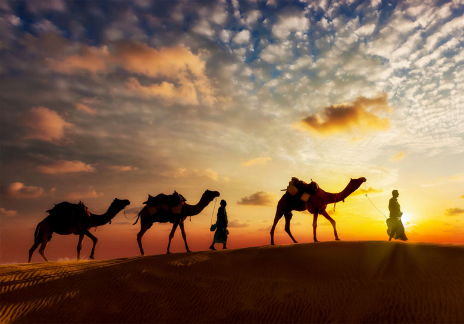

Jaipur has lots to offer to even the most average tourists. Forts, monuments, temples, Gardens, museums and vast market places of Jaipur bring tourists who come from all around the world to experience the food, fun and frolic at this wonderful town.
Udaipur
While in a few texts, it has been termed as the Venice of the East, the City of Udaipur is known by its common moniker, the city of lakes. The city was the capital of the Sisodiya Rajputs of Mewar and is famous for its palaces that exemplify the finesse of Rajputana Style architecture.

Jaisalmer
The aptly named “golden city”, which comes from its view during the day, the city of Jaisalmer lies in the heart of the Thar Desert. he city gets its name from the golden sands of the Thar Desert and the same golden colored sandstone used in the city’s architecture.